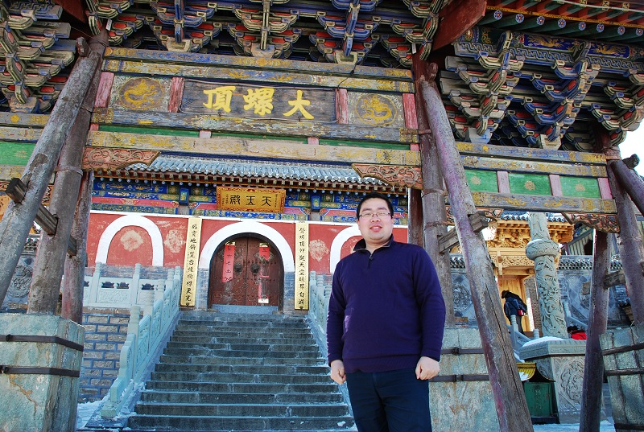
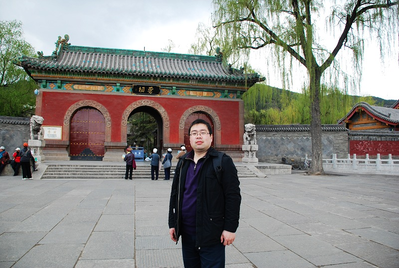

黛螺顶
首页
抱朴守静
#1 黛螺顶 作者：有志青年 发表时间：2010-5-19 8:30:11


［此帖子已被 有志青年 在 2010-5-19 8:30:24 编辑过］
#2 Re:黛螺顶 作者：心上人 发表时间：2010-5-19 10:28:23
漂亮的地方，有机会去玩
#3 Re:黛螺顶 作者：一笑微微 发表时间：2010-5-19 12:37:48
有志，你的下巴快赶上我的了
#4 Re:黛螺顶 作者：山寨版某某某 发表时间：2010-5-19 13:44:09
<IMG src="UpFile/UpFace/4.gif" onload="/if(this.width>120)this.width=120;if(this.height>120)this.height=120;"> 挺像
#5 Re:黛螺顶 作者：屏蔽 发表时间：2010-5-19 14:11:23
有志你胖了
#6 Re:黛螺顶 作者：山寨版某某某 发表时间：2010-5-19 16:07:36
双下巴颏 好可爱
#7 Re:黛螺顶 作者：gerbo 发表时间：2010-5-19 17:08:50
浑然大气的古寺跟有志大哥。两者皆大气 把有志大哥的体重分我点就好了。我走在路上感觉轻飘飘。我家里里人都比我重，这是为什么捏？老妈也比我重，个头小个头，哎~~
把有志大哥的体重分我点就好了。我走在路上感觉轻飘飘。我家里里人都比我重，这是为什么捏？老妈也比我重，个头小个头，哎~~ 帅是帅呆了就是轻了点，让人感觉不可靠（严重影响业务发展啊）~~老弟都跟我差不多高，但他看上去比我高。对自己的体型挫折了。
帅是帅呆了就是轻了点，让人感觉不可靠（严重影响业务发展啊）~~老弟都跟我差不多高，但他看上去比我高。对自己的体型挫折了。
#8 Re:黛螺顶 作者：黄药师 发表时间：2010-5-19 20:38:20
 .....
.....
#9 Re:黛螺顶 作者：非黑既白 发表时间：2011-7-25 20:28:03
人比门大